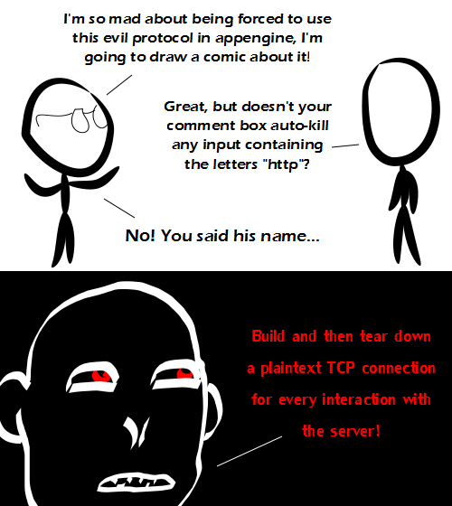

Comic JK 870
When I Feel Like It
⇤
<
?
>
⇥

⇤
<
?
>
⇥
Forum
.
RSS
.
Digg
.
Facebook
.
Reddit
.
Twitter
.
Stumbleupon
http://www.Enter-your-thoughts-on-number-870-here.-Please,-no-spamming,-trolling,-or-phreaking.com HTTP! HTTP! HTTP! HTTP! HTTP! ////////////////////////////////////////////////////// >Wrong slash! SPDY! ^Way to go 'fer the obvious comment. > //This is bridge I use Vimperator and I disabled the address bar. The input scrubber is much better now! >Unicode support would still be nice though. �ŕ�ĝḧẗ? >Yes, this is further proof that the great author listens to us. Although still that extra stripslashes() function. Or he could just run it through mysql_real_escape_string() an extra time... httplural:// Its not in my address bar....why are you trying to scare me? I thought we were friends AltText! what's an address bar? > the place where you could theoretically type in the address, which used to actually display the entire address. It may do so even now, if you have the right browser and/or settings. >> Oh, yeah that, I replaced that when I installed vimperator. Not really true in 1.1 - you can get connection reuse if both client and server support it. However, you still stream the request headers and response headers, all for that tiny bit of content you actually need - because today's webpages are not really pages, they're applications with a lot of tiny bits, each loads on it's own. See SPDY. @title-text: Not in firefox-nightly. >Also not so in Chrome. >>If you can't see the http in Firefox, type about:config in your address bar, promise to be careful, and set browser.urlbar.trimURLs to be false (you should be able to filter for that, then double click it to toggle it) Man, that is a scary depiction of an anthropomorphic hypertext transfer protocol... And all too accurate. >It... it looks like Voldemort? >>That was my thought also! Here's a tip for people who use a decent browser: opera:config#UserPrefs|ShowFullURL > Opera is the original spyware-infested browser. Now we have Chrome to deal with. >Is there actually any browser which isn't text-based which doesn't have terrible performance under Linux (Firefox), doesn't bring along Big Brother and has a good amount of addon-writeabality*? * (Got to include possibilities like NoScript, BetterPrivacy, OptimizeGoogle and so on.) >> Several gecko-based browsers are much faster than Firefox (e.g. Epiphany, Iceweasel), but they generally also lack comprehensive plugin support. >>You can disable all the external services in Opera quite easily. >> Firefox is WAY faster on Linux than Windows for me. On Windows it will become unresponsive for the first 20 seconds while it's loading all my tabs. On Linux (Mint), I can use it within 2 seconds after launching it. >>> Same release? >>>> Same major version (10). The minor version changes too often for me to keep track of. I don't notice any large performance differences between most minor versions anyways. >>>>> I'm waiting for something as amazing as tab groups (it saved my RAM)